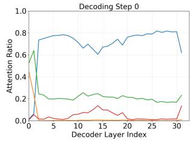

Figureure 1 · LEFT: Visual token pruning affects dMLLMs much more than autoregressivFigure 1. LEFT: Visual token pruning affects dMLLMs much more than autoregressive MLLMs. Three representative pruning methods [1, 5, 64] are applied to LLaVA-NeXT [30] (solid lines), LaViDa-Dream [25], and LLaDA-V [61] (dotted lines). RIGHT: Performance vs. pruning start step. Unlike AR-to-diffusion LaViDa-Dream, the from-scratch LLaDA-V consistently recovers pruning-induced information loss, achieving much higher accuracy when pruning starts at different denoising steps (projected to 0–100 for visualization).这张图/表用于判断 A Comprehensive Study on Visual 的实验收益来自哪里。重点看替换、消融或跨模型设置下趋势是否一致，而不是只看单个最高分。

(h) Figure 2(h) Figure 2. Visualization of the fraction of attention from answer tokens to each token type across layers, and of logit dynamics across denoising steps. (a, d) show the heatmaps and attention ratio variations of LaViDa-Dream [25] (representing AR-to-diffusion dMLLMs) across both short- and long-answer tasks. (b, e) correspond to LLaDA-V [61] (representing from-scratch dMLLMs) on paragraph-level long-answer tasks (Video Detail Description [34]). (c, f) present LLaDA-V on sentence-level long-answer tasks (InfoVQA [39] and DocVQA [38]). (g) shows the attention ratio trends of LLaDA-V on short-answer tasks, and (h) depicts those of MLLMs on both shortand long-answer tasks. We observe three key patterns: (1) Compared with MLLMs, both dMLLM variants exhibit stronger reliance on visual tokens, leading to a more pronounced performance drop when visual tokens are pruned. (2) The self-attention intensity among answer tokens progressively increases from MLLMs to LaViDa-Dream and LLaDA-V, endowing dMLLMs, especially LLaDA-V, with a stronger capacity to recover lost information through bidirectional contextual refinement. (3) Steps 7–8 in (c) and (f) reveal a consistent pattern where a rise in logits follows a preceding surge in answer-token self-attention, suggesting that stronger self-attention facilitates information restoration during denoising.这张图/表用于判断 A Comprehensive Study on Visual 的实验收益来自哪里。重点看替换、消融或跨模型设置下趋势是否一致，而不是只看单个最高分。